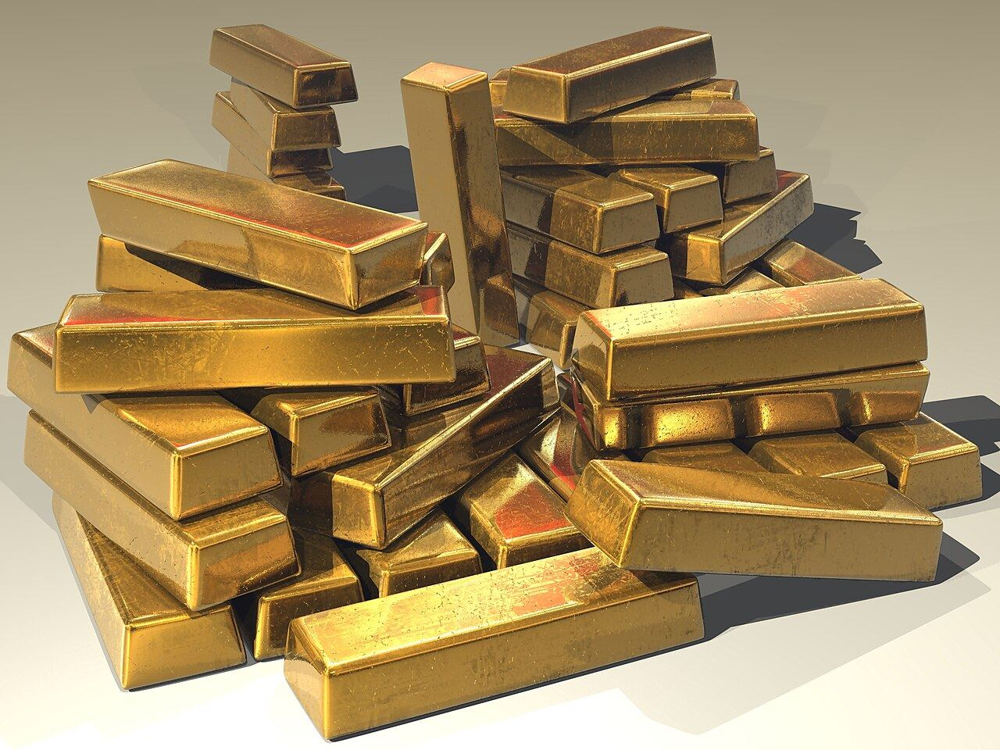

Half-time for gold: a $1,400 round trip and the level the trade must design for
From a $5,405 January peak to a $4,001.80 June trough, bullion's first half was a stress test of every gram on every bench. The consensus for the second half is calmer — and that is its own kind of decision.

§1The first half reads like a mountain profile.
Strip the noise and gold's first half reads like a mountain profile: a vertical ascent to $5,405 an ounce on January 29, a long violent descent to $4,001.80 on June 25, and a camp established since around the $4,100 line — down roughly seven percent for the year, yet still among the best-performing assets over the trailing twelve months.
Thirty-day realized volatility topped fifty percent at the worst of it, against a twenty-year average of seventeen.
§2Asia is, functionally, the floor under this market.
The World Gold Council's attribution work tells the trade where the price actually came from: momentum and investor flows explain about a quarter of the first half's variability, risk and uncertainty another seventeen percent, currency effects fourteen.
And the geography matters more than the math — Asia was the engine of price support, with most of the meaningful rebounds occurring during Asian trading hours. The counter in Shenzhen and the wholesaler in Mumbai are, functionally, the floor under this market.
The second-half consensus is almost suspiciously tidy: a base case of plus-or-minus five percent around $4,100, an upside scenario toward $4,500 on economic deterioration or geopolitical shock, a downside of ten to fifteen percent cushioned by bargain hunting.
Central-bank arithmetic frames the band — every twenty to thirty tonnes of official buying above the 600-tonne annual run rate is worth roughly one percent on the price.
§3$4,000-plus is the planning assumption, not the anomaly.
For the jewelry trade the implication is uncomfortable but clarifying: $4,000-plus is not an anomaly to be waited out. It is the planning assumption. The manufacturers who spent the spring re-engineering — hollow forms, lighter gauges, beads and cords where chains used to be — were not panicking; they were repricing the category's raw material a season ahead of their competitors.
But a $4,100 equilibrium with tamed volatility is the most workable gold market the bench has had in two years.
The half-time score flatters no one — bulls hold a seven-percent loss, bears with a market that refused to break $4,000. But a $4,100 equilibrium with tamed volatility is the most workable gold market the bench has had in two years.
Design for it.
The trade, filed to your inbox before the New York open.
Prices, tenders and the one story that moved the industry overnight — read in ninety seconds.
Subscribe free →